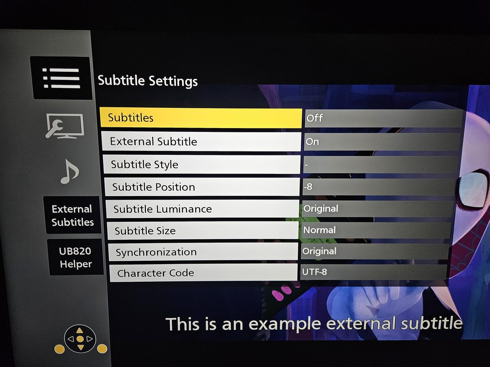
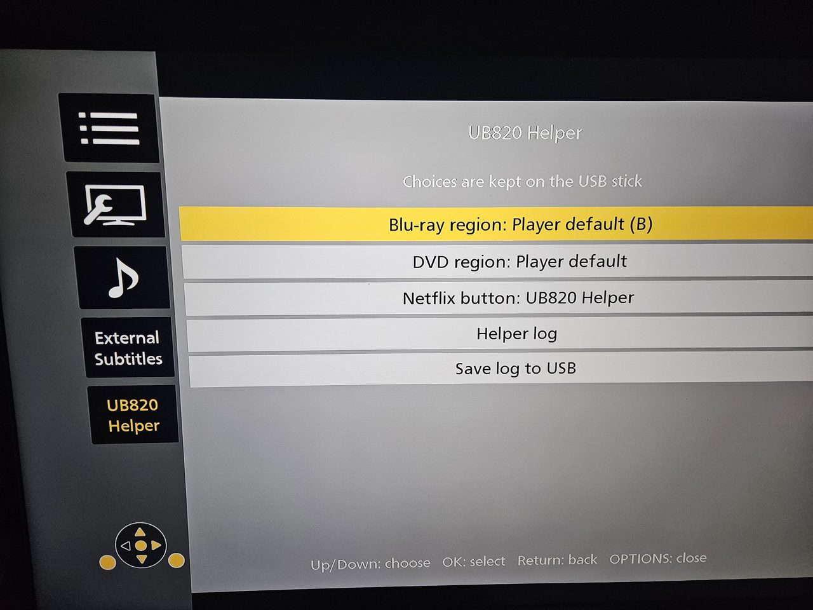
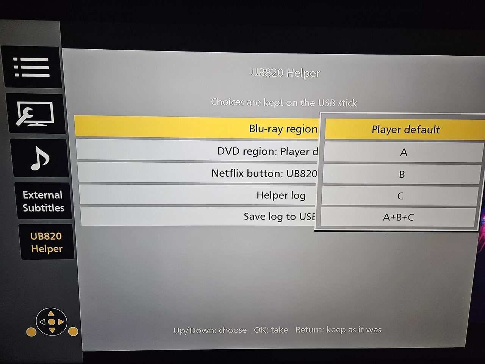

UB820 Helper
A RAM-only, modular add-on for the Panasonic DP-UB820 Ultra HD Blu-ray
player (firmware 1.82, and 1.85). It adds external .srt subtitles,
a UB820 Helper menu in OPTIONS and in Player Settings, Blu-ray and DVD
region choices, a configurable Netflix button and a few diagnostic tools.
Nothing is written to flash, EEPROM or the drive: a full power cycle removes
everything.
Tip
Press the Netflix button on the remote and the UB820 Helper window opens over whatever is on screen: the home screen, a menu or a film. Press it again, or Return, to close it. This is the default; the button can also be set back to Netflix or to do nothing.

Each feature is a separate module that you can switch on or off in one settings file, and new modules can be added without touching the others.
Note
Developed and tested on a DP-UB820 with firmware 1.82. Support for 1.85 is built from a comparison of the two firmware versions and has not been confirmed on a 1.85 player yet. This is an unofficial project with no affiliation to Panasonic.
Contents
- Features
- Screenshots
- Requirements
- Installation
- Using the menus
- Configuration
- Firmware support
- How it works
- Building from source
- Known limitations
- Troubleshooting
- License
Features
| Module | What it does | Default |
|---|---|---|
external_subtitles |
External .srt subtitles from the USB stick, chosen during playback in OPTIONS > External Subtitles: browse folders, pick a file, switch On/Off. Disc-like look (white text, neutral black outline, stable bottom line). Also unlocks the player's own hidden subtitle rows in OPTIONS (size, sync, character code, on/off), with English text where the firmware has no translation. |
on |
ui |
The menus: External Subtitles and UB820 Helper in OPTIONS, and the same UB820 Helper as a tile in Player Settings > System, reachable without a disc. | on |
region |
Blu-ray region the disc sees (fixed A/B/C or all three; an experimental auto is off by default). DVD region, best effort (no region error, or a fixed region 1-8). Region diagnostics in the log. |
on |
remote |
What the remote's Netflix button does: open Netflix as usual, nothing, or open the UB820 Helper menu as an overlay anywhere (home screen, menus, playback). | on |
log |
The helper log: level, saving it to the stick (on request or continuously), and optional detailed diagnostics of the player (crashes, hangs, kernel messages). | on |
ssh |
An on-demand diagnostic SSH server (Dropbear), started from the menu. Key or password login. | off |
Screenshots
Photos of a DP-UB820 with the English menu language.
 |
 |
External Subtitles in OPTIONS: browse the stick and pick a .srt file |
The chosen file on screen, in the disc-like style |
 |
 |
| The player's hidden subtitle rows (size, position, sync, character code), unlocked | UB820 Helper in OPTIONS, shown as soon as its tile has the focus |
 |
|
| Choosing the Blu-ray region from a list | The same menu as an overlay, opened with the Netflix button |


Requirements
- A Panasonic DP-UB820 with firmware 1.82 or 1.85. Every module checks the exact SHA-256 of each program it changes and leaves anything else alone; on any other firmware the helper changes nothing.
- A USB stick formatted as FAT32.
- A way to launch the loader file from the stick with the player's usual loader start-up procedure.
Installation
-
Copy the contents of
USB-CONTENTS/to the root of the USB stick, keeping thesubfolder:USB root ├── LOADER.MKV loader (launch this one) └── sub/ ├── engage the helper: all modules + RAM loader ├── modules.cfg settings: which modules run, and their options └── sub.srt default subtitle used by the player (fallback)Put your own
.srtfiles anywhere on the stick; subfolders work. -
Fully power-cycle the player (unplug it, or turn Quick Start off), so the helper starts fresh. Standby keeps whatever already runs in RAM.
-
Insert the stick and launch
LOADER.MKV. The player then says the file cannot be opened. This is expected: the file only starts the helper and has nothing to play. Dismiss the message. -
The helper is now running until the next power cycle. Start a disc and press OPTIONS to find External Subtitles and UB820 Helper, or open Setup > Player Settings > System > UB820 Helper without a disc.
Using the menus
| Key | Action |
|---|---|
| Up / Down | move between rows (scroll in the log view) |
| OK / Right | enter the page; then open a folder, select a file, open a list, run an action |
| Return / Left | close a list or the log view, then go back to the tile |
| OPTIONS | close everything as usual |
As with the player's own categories, a page is shown as soon as its tile on the left has the focus; OK or Right moves into it.
A row with several values (Subtitles On/Off, Blu-ray region, DVD region, Netflix button) opens a list beside it with the current value highlighted: OK takes the highlighted one, Return keeps the old one.
External Subtitles (OPTIONS, during playback). The header shows the
current folder and state, for example On | /mnt/usb/SUB/movie.srt. Rows:
[..] Up one folder, Subtitles: On/Off, Refresh files, then the
subfolders, then the .srt files. A chosen file takes over at the current
film position; choosing it again re-reads it.
UB820 Helper (OPTIONS, Player Settings > System, or the Netflix button):
- Blu-ray region: Player default (default), A, B, C or
A+B+C (and Auto when
bd_auto=1). The row says what the disc in the drive sees, e.g.A (this disc still: B)until the next disc. A new choice applies from the next disc on. - DVD region: Player default (default), Auto, No region check, or a region 1-8. Applies within a second; restart a DVD that already stopped with a region error. See the limits.
- Netflix button: UB820 Helper (default), Netflix or Does nothing. UB820 Helper opens this menu as an overlay wherever you are, and Return or the Netflix button closes it. While the overlay is open the remote only works the overlay.
- Start SSH / Stop SSH, when
[ssh]is enabled. - Helper log: the last lines of the helper log, on screen.
- Save log to USB: writes the log to
sub/ub820_submenu.log. Withsave=alwaysthe row only says that this happens automatically.
Choices made in the menu are saved on the stick in sub/ub820_menu.cfg.
Configuration: sub/modules.cfg
The helper reads this file once at start; power-cycle and launch the loader
again after editing it. Each [section] is one module, and enabled=0
switches it off. Choices made in the UB820 Helper menu are saved to
sub/ub820_menu.cfg, which is read after modules.cfg and wins; delete it to
go back to modules.cfg alone. Invalid or out-of-range values are ignored
(the default stays) and noted in the log as config: lines.
[external_subtitles]
| Key | Default | Values | Meaning |
|---|---|---|---|
font_percent |
122 |
90 to 150 | Font scale. |
position |
-8 |
-10 to 10 | Vertical step; lower numbers move the text down. |
bottom_align |
1 |
0 or 1 | 1 keeps one- and two-line cues on the same bottom line; 0 is the stock behaviour. |
native_options |
1 |
0 or 1 | The player's own size, sync, character code and on/off rows in OPTIONS. |
english_text |
1 |
0 or 1 | English text for those rows in menu languages where the firmware has none. |
The player's own subtitle position and size settings keep working.
[region]
| Key | Default | Values | Meaning |
|---|---|---|---|
bd_region |
stock |
stock, A, B, C, ABC, auto |
Region a Blu-ray sees. stock leaves the player alone; A/B/C force one region; ABC sets all three bits (only for discs that test a bit mask); auto needs bd_auto=1. |
bd_auto |
0 |
0 or 1 | Experimental: allows bd_region=auto, which keeps the player's region unless the disc's HDMV program accepts only other regions (discs that check in Java, BD-J, keep the player's region). With 0, auto is not offered in the menus and counts as stock. |
dvd_region |
stock |
stock, free, 1-8, auto |
DVD region, best effort. free: a disc is never stopped with a region error; 1-8: also the region discs see; auto: no region error, and a disc that excludes the player's region sees the first one it allows. |
[remote]
| Key | Default | Values | Meaning |
|---|---|---|---|
netflix_key |
helper |
helper, netflix, nothing |
What the Netflix button does. nothing drops the key the way the firmware does on models without Netflix; helper opens and closes the UB820 Helper overlay. |
[log]
| Key | Default | Values | Meaning |
|---|---|---|---|
level |
info |
errors, info, debug |
Detail of the helper log. Errors are always kept. |
save |
menu |
off, menu, always |
When the log goes to sub/ub820_submenu.log: menu when you choose Save log to USB; always a few seconds after each change and at once after a crash report, keeping the previous run's log as sub/ub820_submenu.prev.log; off never. |
diagnostics |
0 |
0 or 1 | Detailed diagnostics of the player itself: crash reports, stuck or spinning threads, programs starting and ending, kernel messages, low memory, and a load line every minute. Best with save=always. |
[ssh]
| Key | Default | Values | Meaning |
|---|---|---|---|
enabled |
0 |
0 or 1 | 1 adds Start SSH to the UB820 Helper menu. Nothing listens until you start it there. |
auth |
key |
key, password |
key: log in with a key whose public half is in sub/authorized_keys on the stick. password: the password is the one line in sub/ssh_password on the stick. |
port |
2222 |
1024 to 65535 | TCP port. |
guard |
0 |
0 or 1 | Logs every program a session starts, and ends a session whose shells keep starting each other. Diagnostic. |
Connect with ssh root@<player-ip> -p 2222; the menu shows the exact line
after you start the server. Key login is recommended. With a password,
it sits in clear text on the stick (the helper hands Dropbear only a $6$
hash), and the player has no firewall, so anyone on your network can reach
the port. The server runs only after you start it and is gone after a power
cycle.
Firmware support
| Firmware | Status |
|---|---|
| 1.82 | Everything; tested on a player. |
| 1.85 | Everything except the English text of the native subtitle rows (the firmware's language file changed); not yet confirmed on a player. |
| other | Nothing is changed. |
For 1.85, programs that are byte for byte the same as in 1.82 take the 1.82
code as it is; apl_bdv keeps its code and only its region data moved;
apl_mgr and apl_setting changed, so their payloads carry their own 1.85
addresses, each one checked against the 1.82 machine code. Every decision is
in the helper log. Expected hashes are in the module manifests
(source/modules/*/*.json) and in source/core/injector.c.
How it works
LOADER.MKV ──► starts sub/engage (core + modules, static ARM binary)
│
├─ ui: menu payload ──► apl_dispsrv (OPTIONS menus, overlay)
│ settings payload ──► apl_setting (Player Settings tile)
├─ external_subtitles: engine ──► apl_meda_bdplay (SRT engine)
│ native rows, English text ──► apl_dispsrv (data only)
├─ region: BD / DVD region ──► apl_bdv, apl_meda_dvdv
├─ remote: keys payload ──► apl_mgr (key filter)
├─ log: log, saving, diagnostics
└─ ssh: static Dropbear in RAM, on demand
- Core (
source/core/) finds the player's processes once per second, checks each program's exact hash, installs payloads withinjector.c(ptrace, hook trampolines checked against the original bytes), calls every module part, writes the log and reads the settings. The module interface isub.h. A payload carries one set of addresses per supported firmware build. - Circuit breaker. If a player process ends after a module part changed it, that part stays off until the next power cycle, and the log says which.
- The stick is not mounted in Linux. The player reaches it only through
its own user-space file layer,
libufs. The helper carries a small tool,tools/ufs, linked against the player's own libc andlibufs.so, that copies single files between the stick and/tmpthe way the player itself does. - Linux 4.4. The player runs Linux 4.4 with 32-bit programs. The helper's
periodic work uses
sys.c, which calls 4.4 syscalls directly instead of newer ones the kernel lacks;tests/sys_check.cverifies this underqemu-arm -strace. ui(source/modules/ui/):menu.cruns insideapl_dispsrvand adds the two OPTIONS categories with the player's own CTK/GTK widgets; the same page also opens as an overlay when the Netflix button is set to do so.settings.cruns insideapl_setting(started only while Player Settings is open) and adds the System tile and its submenu. Both sharehelper_actions.hand talk to the other modules only through files in/tmp(helper_menu.h), so each module keeps working without them.external_subtitles:backend.cruns insideapl_meda_bdplay, hooks the native subtitle functions and restarts the stock SRT parser on the chosen file. The menu and the backend exchange fixed-size, versioned records in/tmp(protocol.h). The native rows are shown by setting one cached flag inapl_dispsrv, and their English text comes from swapping two read-only pages of the language file for a private copy; no code is changed for either.region: a Blu-ray's region check is the disc's own program reading PSR20, so there is nothing to remove in the player; the module chooses the value at its source.apl_bdv(started for each disc) asks the drive for its region once, as it starts, and turns the answer into 1, 2 or 4 with threemovsinstructions. A watcher process is told (inotify) whenapl_bdvis executed, stops it before it has asked the drive, decides the region (forautoit reads the disc's files) and changes those three immediates in that process's own copy, so the player itself carries the chosen region into its configuration and PSR20 before any disc program runs. If it ever comes too late, it sets PSR20 instead, and the log says which of the two happened. For DVD the module changes the DVD process's own copy of two code sites inlibnavi_api.so: the branch after the drive's region answer (so the disc is never stopped with a region error) and the function that gives discs the player's region. The original bytes are checked before each change and put back forstock.remote:keys.cruns insideapl_mgr, which asks a key filter about every remote and HDMI-CEC key. It drops the Netflix key, or sends it (and, while the overlay is open, every key) through a FIFO to the overlay inapl_dispsrv. If nothing reads the FIFO, keys go through as usual, so the remote cannot get stuck.logkeeps the runtime log in/tmp/ub820_submenu.log(the oldest half is dropped at 256 KB). Withdiagnostics=1it also reports crashes (the kernel'score_patternis pointed at the helper, which logs registers and code addresses from the core's notes and discards the rest), stuck or spinning threads, programs starting and ending, kernel messages and low memory.sshruns a prebuilt static Dropbear from RAM; seesource/tools/ssh/. Programs it starts get default signal handling and no inherited descriptors; Stop SSH also ends open sessions.
To write a module of your own, see CONTRIBUTING.md.
Building from source
The prebuilt USB-CONTENTS/sub/engage is reproducible: building this
repository gives a byte-identical file with SHA-256
521887b27f92a12ce045072aebda39d1c70f1336c50165ca768745c7daf534c6.
Requirements: Windows with WSL (Ubuntu) providing arm-linux-gnueabihf-gcc,
gcc and qemu-arm.
python source/build.py --helper
builds the helper from the committed source/generated/
files (no firmware needed) and self-tests it under qemu-arm.
The full build recompiles the payloads, regenerates the hook trampolines
from the stock firmware executables and links tools/ufs against the
player's libufs.so and libc-2.20-2014.11.so. None of the firmware files
are included in this repository. It also needs the Python packages
pyelftools, capstone and keystone-engine:
UB820_FIRMWARE_DIR=/path/to/v182/appfs/dtvrec/bin \
UB820_FIRMWARE_DIR_185=/path/to/v185/appfs/dtvrec/bin python source/build.py
UB820_ROOTFS_LIB overrides where the stock libc-2.20-2014.11.so is
(default: <1.82 firmware>/rootfs/lib). Output goes to source/build/.
Host tests (x86, in WSL); with UB820_FIRMWARE_DIR set they also check the
English-text page swap against the real language file:
python source/tests/run_tests.py
Known limitations
- DVD region is best effort. The drive keeps its own region, so an encrypted (CSS) DVD from another region may still not play even though the player no longer refuses it; unencrypted discs are the realistic case. It has not been tested with a foreign-region disc.
- Blu-ray
auto(experimental,bd_auto=1) does not analyse discs that check their region in Java (BD-J); choose a region letter for those. - External subtitles: at most 64 entries per folder (use subfolders), full paths up to 250 bytes, and the chosen file is remembered for the current playback only.
- A media or state change may close an open menu; open it again.
- Not covered by testing so far: unusual filename encodings, very large or
corrupt
.srtfiles, removing the stick while a file is being read, and firmware 1.85 on a real player.
Troubleshooting
- The menu does not appear. Power-cycle the player fully, launch the
loader again before starting a disc, then read the log (on the stick, or
in the menu if it appears): look for
Installed apl_dispsrv,giving up installing, or a line saying that a process ended and a part is off. - No log on the stick. With
save=menuthe log is written only when you choose Save log to USB; the menu then says whether it worked. Withsave=alwaysa failure is logged ascannot save the log to the stickand retried every minute. - The player crashes, freezes or reboots. Set
save=alwaysanddiagnostics=1, power-cycle, reproduce it with the stick inserted, then readsub/ub820_submenu.log(orsub/ub820_submenu.prev.log). Look forcrash:,diag:andkernel:lines just before the end. - Settings are ignored. The log starts with
config: copied /mnt/usb/sub/modules.cfg from the stickwhen the file was read; otherwise aconfig:line gives the reason. The file is read only at start. - Anything misbehaves. Remove the stick and power-cycle the player: every change lives in RAM.
License
Released under the MIT License, see LICENSE.
Third-party components in the binaries: the helper engage is statically
linked with the GNU C Library (LGPL-2.1-or-later); its complete source and
build are in this repository, so it can be rebuilt and relinked. It embeds
the prebuilt Dropbear binaries, which
are statically linked with musl; their license
texts are in source/tools/ssh/licenses/.
This project is not affiliated with Panasonic. It modifies running processes on your own device and is provided as is, with no warranty.